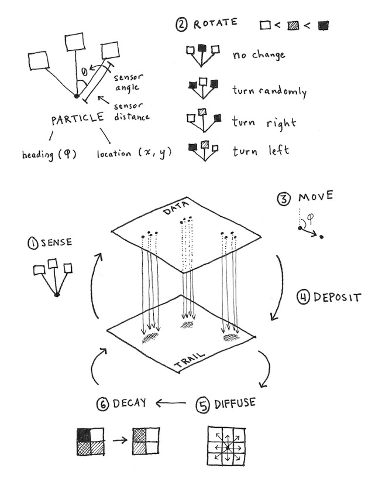

We were feeling in the mood to work on cellular automata, so inspired by research on pattern formation observed in the true slime mold Physarum polycephalum (Jones 2010), we decided to implement an interactive simulation of this organism's fascinating behavior!
Instructions:
Click anywhere on the canvas to begin growing the slime mold from that point.
Hold SHIFT and click anywhere on the canvas to kill off the slime mold in that particular area.
Hold ALT and click anywhere on the canvas to create an emitter that continuously releases slime mold particles.
Use the provided buttons to clear (remove all slime mold from the scene) and randomize (generate a new scene with random slime mold positioning) the scene.
Tinker around with the model's parameters by entering new values for: r (the radius of the slime mold cluster created by clicking), decayT (the rate at which the attracters that direct the slime mold's growth decay), SA (the sensor angle in radians), RA (the rotation angle in radians), and SS (the 'step size' of the slime mold). Then to update the scene and reflect changes made to these variables, press the update button. Watch as the system exhibits new and complex emergent properties!
How it works:
Despite demonstrating a high capacity for cellular intelligence, the rules driving the slime mold (and their representations in our model) are actually quite simple! Following Jones' observations, we modelled the behavior of Physarum polycephalum as follows:
Every slime mold particle has three sensors, pointing straight ahead, skewed to the left, and skewed to the right. A sensor detects the amount of chemoattractant in its target area.

Each slime mold particle begins by "sensing" for chemoattractants (evaluating the values of its different sensors). If the middle sensor detects the most chemoattractant among the three, the slime mold particle stays oriented in the same direction. If both the left and right sensors detect more chemoattractant than the middle sensor and both detect the same amount, the slime mold particle turns randomly. If the right sensor detects more chemoattractant than the middle sensor, the slime mold particle turns right. If the left sensor detects more chemoattractant than the middle sensor, the slime mold particle turns left. Then, the slime mold particle simply moves forward according to the direction specified by its sensors, according to some specified step size.
Finally, the slime mold particle deposits chemoattractants in the chemoattractant trail layer of the model, and those chemoattractants diffuse into the surrounding area and slowly decays as time goes on. Believe it or not, that's all you need to know to understand how this model functions!